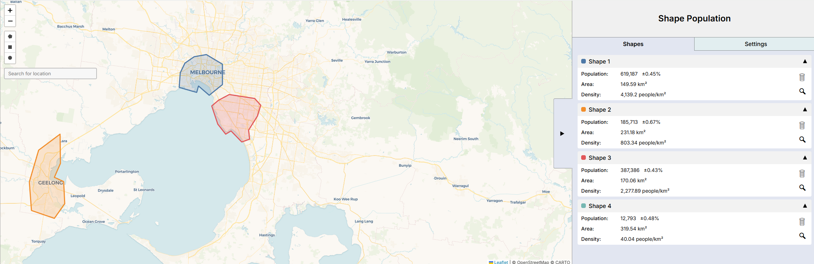
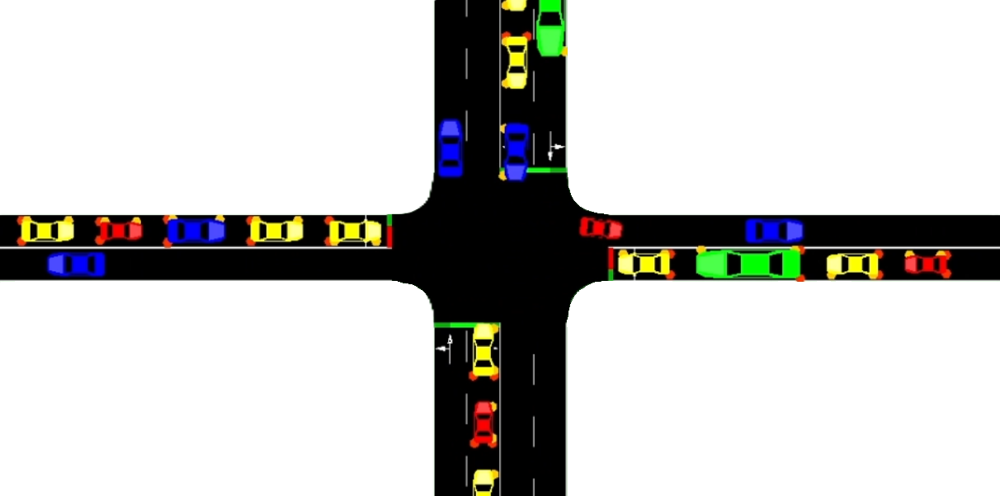
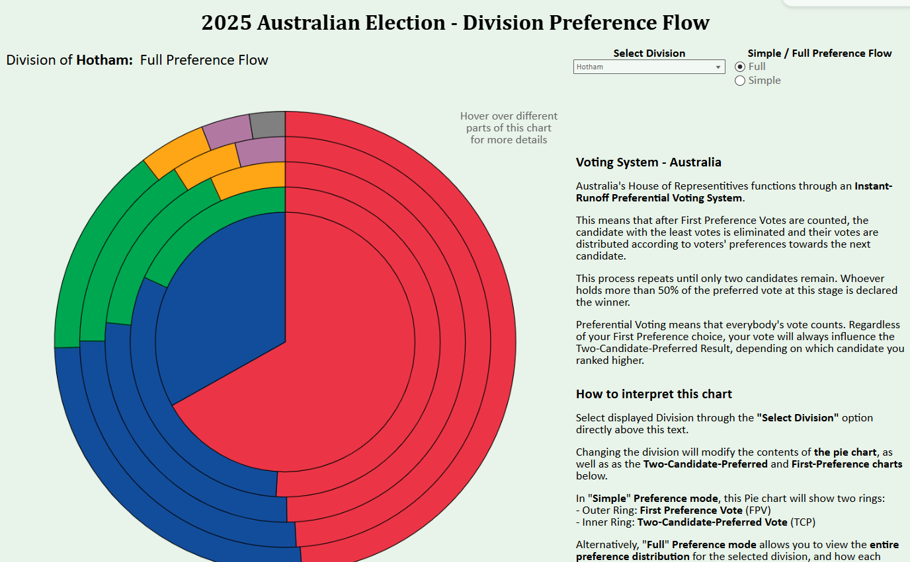

Map Population Application
Interactive Map allowing you to Draw Shapes and Calculate the population inside
Permissive Traffic Light RL agent
Dynamic Simulation of four-way intersection with permissive right turns and shared direction lanes
2025 Australian Election Visualisation
Winner and Preference flows for each division, 2025 Australian election 
Circus Maximus Interactive Diorama
3D-printed interactive Ancient Roman Chariot Racing Stadium